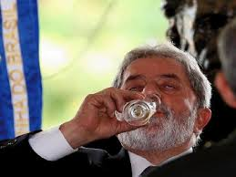

Luiz Inácio Lula da Silva é um dos políticos mais influentes e controversos da história recente do Brasil.
Nascido em 27 de outubro de 1945, em Caetés, Pernambuco, Lula teve uma infância humilde e enfrentou muitas dificuldades antes de se tornar presidente do país.
Lula foi o sétimo dos oito filhos de Aristides Inácio da Silva e Eurídice Ferreira de Melo.
A família migrou para São Paulo em busca de melhores condições de vida. Aos 12 anos, Lula começou a trabalhar como vendedor ambulante e, mais tarde, como metalúrgico.
Carreira Sindical
Na década de 1970, Lula tornou-se líder sindical, destacando-se como presidente do Sindicato dos Metalúrgicos de São Bernardo do Campo e Diadema.
Foi uma figura central nas greves do ABC Paulista (1978-1980), que desafiaram a ditadura militar e marcaram o movimento operário brasileiro.
Fundação do PT e Carreira Política
Em 1980, Lula ajudou a fundar o Partido dos Trabalhadores (PT), um partido de esquerda com base nos movimentos sociais e sindicais. Ele concorreu à presidência em 1989, 1994 e 1998, perdendo todas as vezes antes de vencer em 2002.
presidência da República (2003-2010)
Lula governou o Brasil por dois mandatos (2003-2006 e 2007-2010), com políticas sociais e econômicas que reduziram a pobreza e impulsionaram o crescimento:
Programa Bolsa Família – O Bolsa Família foi criado em 2003 pelo presidente Luiz Inácio Lula da Silva com um propósito claro: erradicar a fome e a miséria no Brasil, garantindo dignidade aos mais pobres.
Mais do que um simples programa de assistência financeira, ele representou uma mudança histórica na forma como o Estado brasileiro enxergava as populações vulneráveis.
Lula, que conhecia de perto a realidade da pobreza, transformou programas sociais fragmentados (herdados de governos anteriores) em uma política pública unificada e eficiente.
O Bolsa Família não apenas transferia renda, mas exigia contrapartidas – como matrícula escolar e acompanhamento de saúde –, garantindo que as famílias tivessem acesso a direitos básicos e uma porta de saída da pobreza.
Política externa ativa – Parcerias com países em desenvolvimento e protagonismo em fóruns como o G20.Seu governo foi marcado por popularidade recorde, mas também por escândalos de corrupção, como o Mensalão.
Após deixar a presidência, Lula continuou influente no PT. Em 2018, foi condenado no caso do triplex do Guarujá (Operação Lava Jato) e preso por 580 dias, até que o STF anulou suas condenações em 2021 por suspeita de parcialidade do juiz Sérgio Moro.
Retorno à Política e Eleição de 2022
Em 2022, Lula disputou e venceu as eleições presidenciais contra Jair Bolsonaro, tornando-se presidente novamente em 1º de janeiro de 2023. Seu terceiro mandato tem sido marcado por:
Retomada de programas sociais (como o novo Bolsa Família). Tensões políticas com o Congresso e o Judiciário. Desafios econômicos, como inflação e crescimento lento. Legado e Controvérsias Lula é uma figura amada por muitos por suas políticas sociais e odiada por outros por escândalos de corrupção e alianças políticas questionáveis. Seu governo atual busca consolidar seu legado, enquanto enfrenta novos desafios. Curiosidades: Lula é o único presidente brasileiro eleito três vezes (considerando seu retorno em 2022). Foi considerado pela revista Time uma das 100 pessoas mais influentes do mundo. Teve sua vida retratada em filmes como Lula, o Filho do Brasil (2009). Lula continua sendo um dos personagens centrais da política brasileira, com um legado que divide opiniões. 